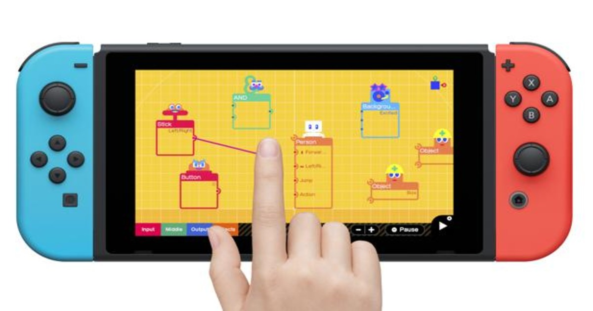

Windows 11
Windows 11 ya es, prácticamente, una realidad. Como prometió ayer Microsoft durante su presentación, el nuevo sistema operativo para equipos de la compañía será completamente gratuito y estará disponible para su instalación a finales del presente 2021. Sin embargo, como suele ocurrir en el campo del software, quedan dudas sobre los equipos que serán compatibles con esta nueva versión.

Nintendo apuesta por los videojuegos exclusivos
Nintendo baila sola. A diferencia de su competencia directa, la firma de Kioto no tiene prisa por anunciar una nueva consola con la que competir dentro de una nueva generación que, por el momento, se está viendo lastrada por la escasez de semiconductores. Hasta la fecha, la firma nipona tampoco se ha mostrado muy interesada por las opciones del juego en 'streaming' y la multiplataforma; que es, precisamente, donde muchas tecnologías ven el futuro dentro del sector del videojuego.